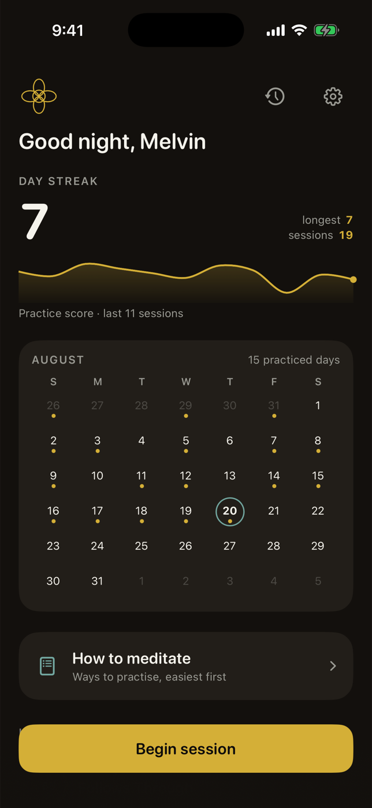
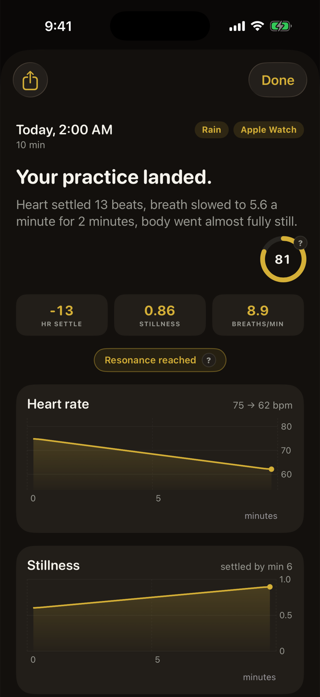
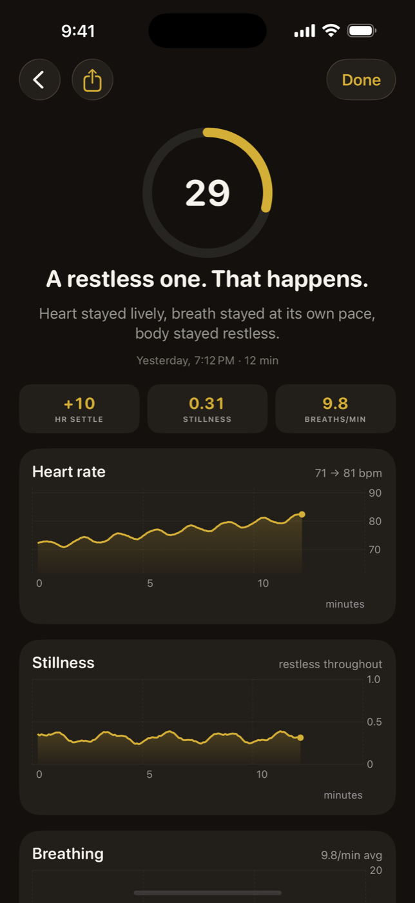
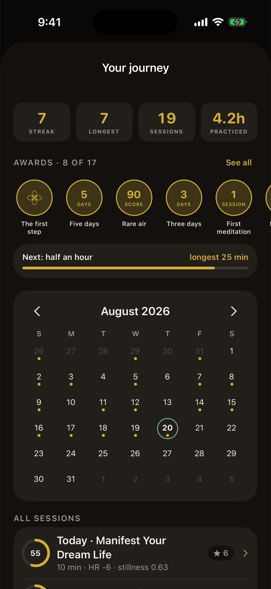
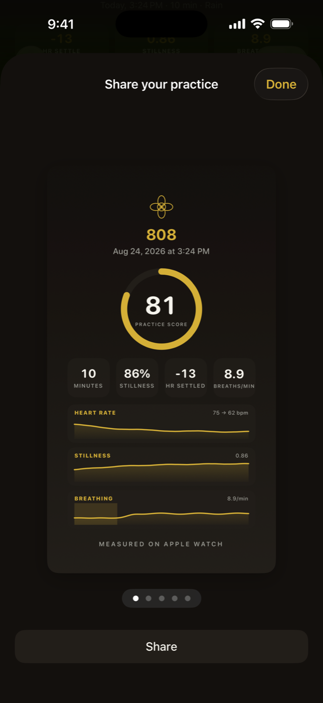
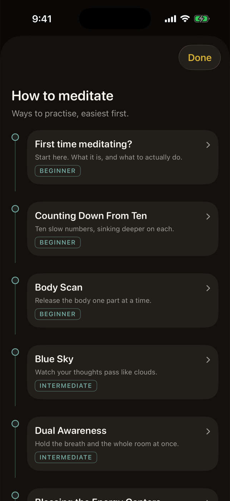

Meet 808, the first app that scores your meditation from your body, with all the tools to verify, track, and share your practice.
We'll email you when 808 is ready.

The most powerful tool you have is your mind. It shapes your reality. Taking care of your body is mainstream. Taking care of your mind is not. The way you take care of your mind is through meditation. So we built 808 to make meditation measurable, habitual, and universal.
01 / What 808 does about it
Heart rate, stillness and breathing, drawn as curves you can read. One score out of 100, scored via our proprietary algorithm, first of its kind. A written takeaway in plain words.
And when a session goes badly, 808 says so. A restless sit scores a 29, not a participation trophy. That is exactly why the good sessions mean something.
The score is free, for every session, forever. Paying unlocks the evidence behind it: the curves, the readings, and the guided journey. You get proof it works before we ask for anything.



Your streak, a calendar of practiced days, and seventeen awards earned by things you actually did. Ten days straight. A score of 90. A full hour in one sitting.
And you will not be doing it alone. Group meditations and challenges run on @808meditate.
Every session becomes a card carrying your measured score, your curves and your streak. Post it to Instagram, X, or anywhere else. Not a claim that you meditated. A reading.


A built-in guide, easiest methods first. Complete beginners start with what meditation even is, then counting down and the body scan. Further along: dual awareness, blessing the energy centers, manifestation.
Or ignore all of it. Play a guided meditation or frequency track from YouTube or Spotify, or sit in silence. The Watch measures either way.
Needs an iPhone and an Apple Watch. Start a session from either one. 808 is a wellness tool, not a medical device. It doesn't diagnose or treat anything, and your measurements never leave your own devices.
02 / What people say
I've started and quit meditating probably six times. The thing that always got me was having no idea if anything was happening. First session with this showed my heart rate dropped 14 beats when i slowed my breathing down and it showed me where on the graph. I know it sounds small but it's the first time I've had any proof I wasn't just sitting there wasting ten minutes.★★★★★ David / beta tester
Big one for me is I already have meditations I like on YouTube. This just runs in the background on my watch and measures. Don't have to switch to their library or listen to some voice I don't like. And I love seeing the data, like how my heart responds to different parts of the meditation★★★★★ Julia / beta tester
Skeptical it could pick up breathing from a wrist but it caught me slowing down at the start of a session and then speeding up later on, surprisingly accurate★★★★★ Ayush / beta tester
I meditate a lot and always wanted to have a way of sharing that I do, now I send my friend my meditation score everytime★★★★★ Maria / beta tester
I track everything else so figured why not my morning meditation as well. I love the streak, keeps me accountable, and the achievements are also fun to hit★★★★★ Gabriel / beta tester
Complete beginner to meditating and tried it out with low expectations, the guide turned out to be incredibly helpful in explaining the purpose and technique to meditating. Cant wait to try out some more advanced meditations★★★★★ Charlie / beta tester
03 / Reasonable company
“It's like having an anchor. If I don't do it, it feels like I'm constantly chasing the day.”
Kobe Bryant“Transcendental Meditation has probably been the single most important reason for whatever success I've had.”
Ray Dalio“Meditation reorders the natural flow of life… Decisions come easily, things fall into place, and there's no conflict.”
Oprah Winfrey“It helps slow things down so that I can act calmly, even in the face of chaos, like a ninja in a street fight.”
Ray DalioRan mindfulness training through Michael Jordan's and Kobe Bryant's championship years.
Phil Jackson's Bulls and LakersHave practised mindfulness as a team since 2011.
The Seattle SeahawksAll credit a meditation practice.
LeBron James, Novak Djokovic, Derek JeterHas practised Transcendental Meditation for roughly forty years.
Jerry SeinfeldQuoted lines are verbatim and on the record. The rest describe a documented practice without putting words in anyone's mouth.
04 / The research
Not our studies. The field's. What a steady practice has measurably done for other people:
Two weeks of meditation training moved students 16 percentile points on GRE reading comprehension, in a randomized trial.2 Fourteen days, and reading the same page got measurably easier.
Across 47 randomized trials, meditation produced real reductions in anxiety and depression.3 Not a vibe. A measured shift, replicated for years.
What these do and do not show. The research above establishes that meditation training helps. It does not show that 808 specifically will do any of this for you, and nothing here is medical advice or a reason to change anything your doctor told you. Nobody has run that trial yet, and we won't pretend otherwise.
If you meditate, or you're ready to start, 808 was made for you. Track your progress, understand your mind, and connect with a global community of practitioners.
We'll email you when 808 is ready.